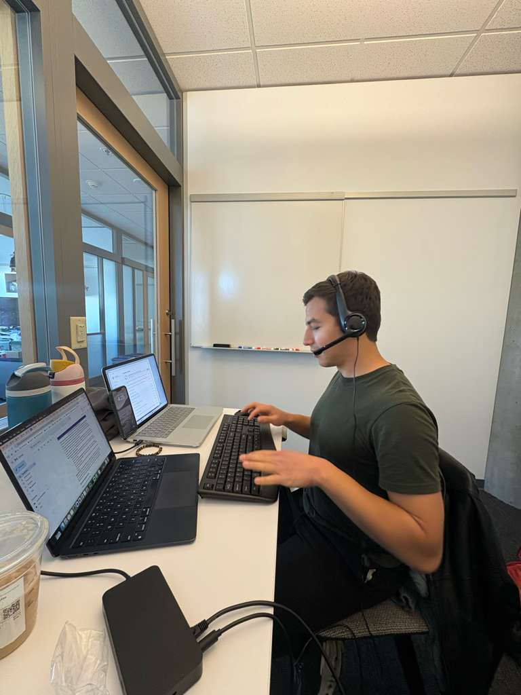
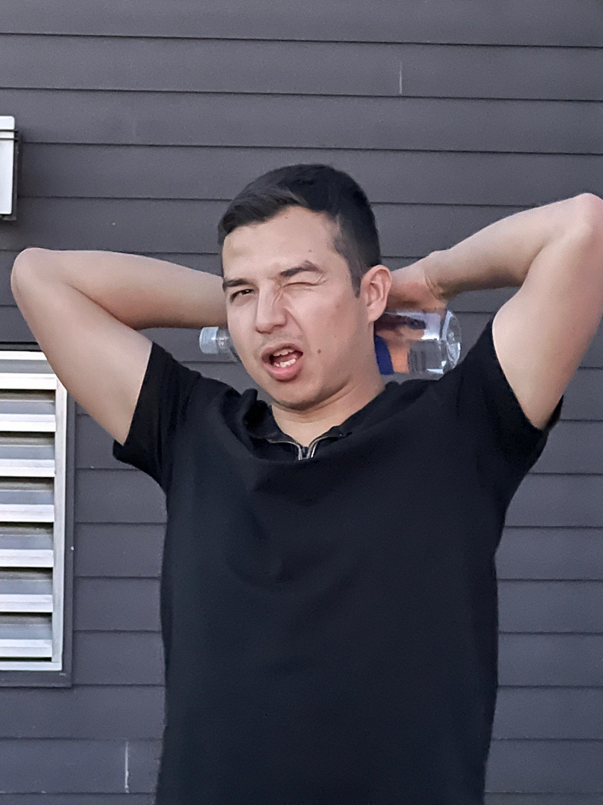
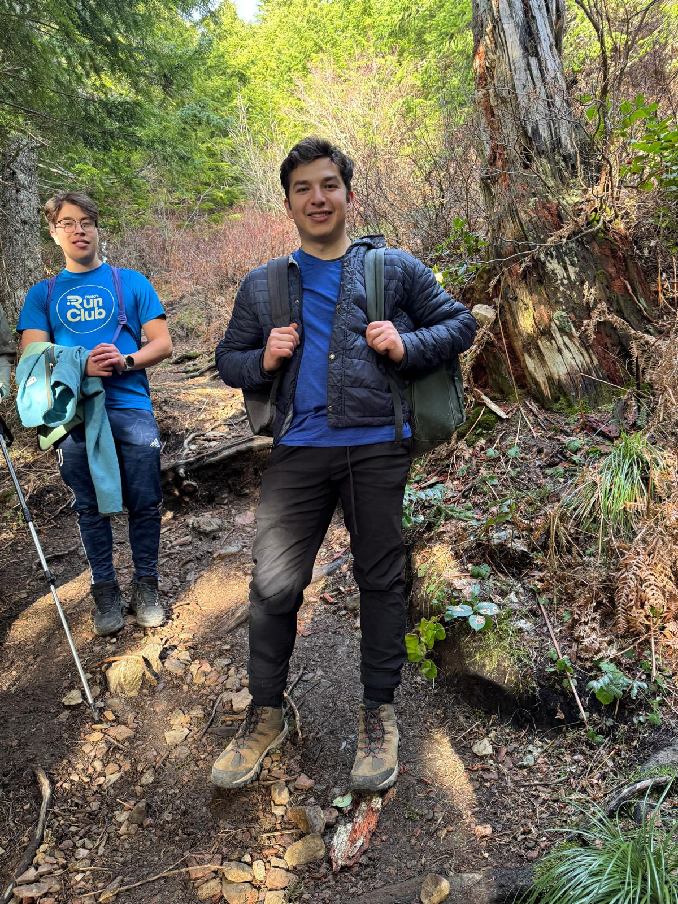
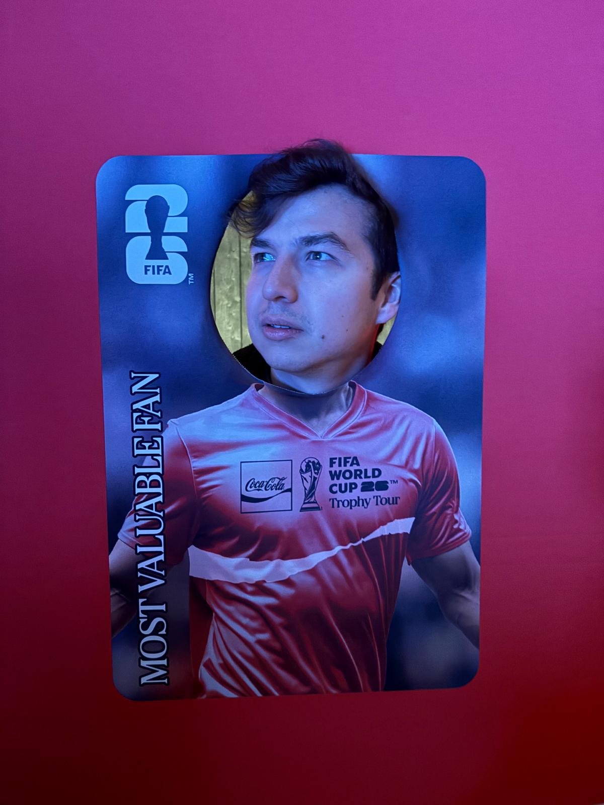
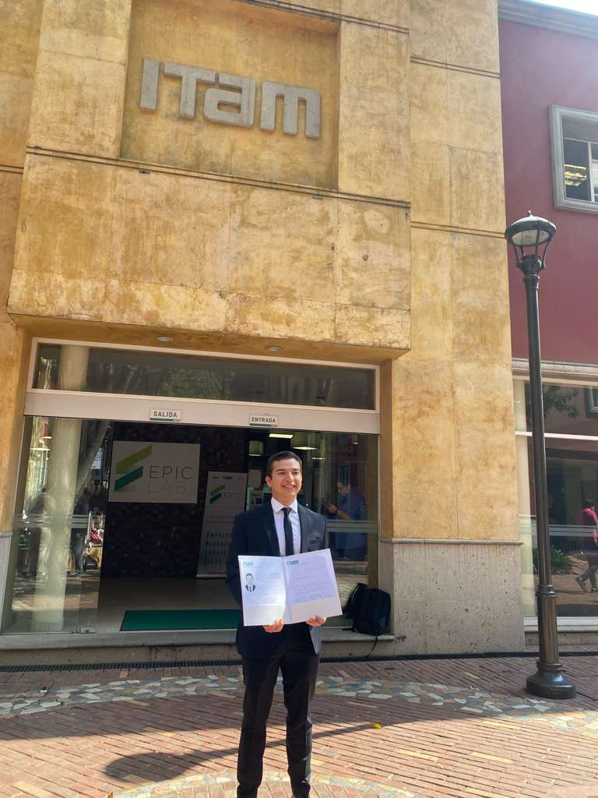
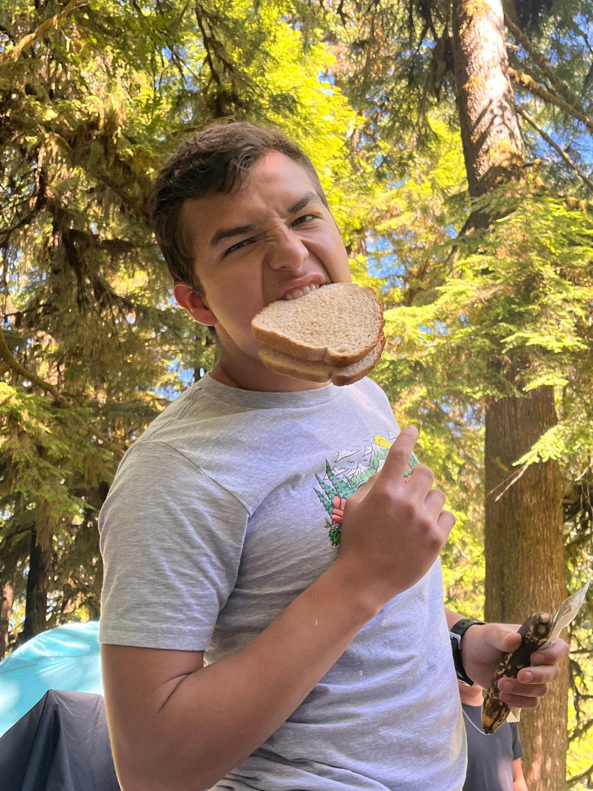
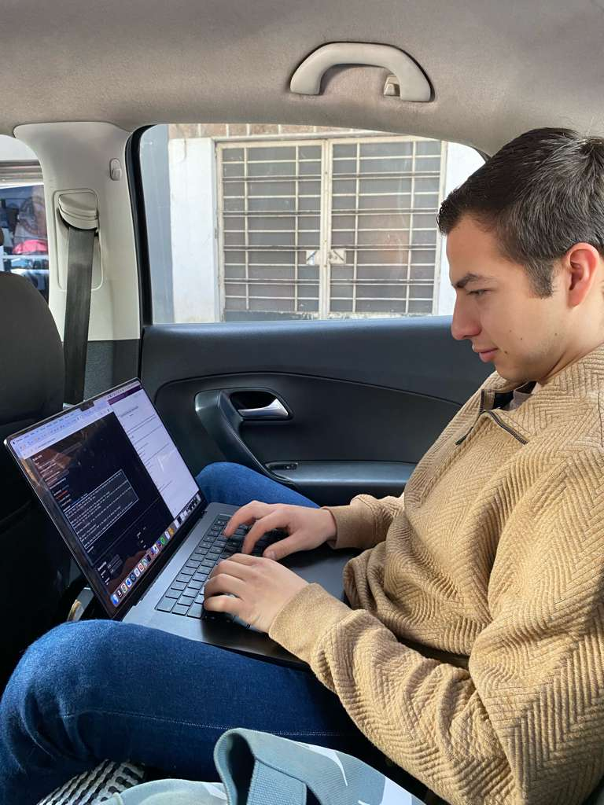
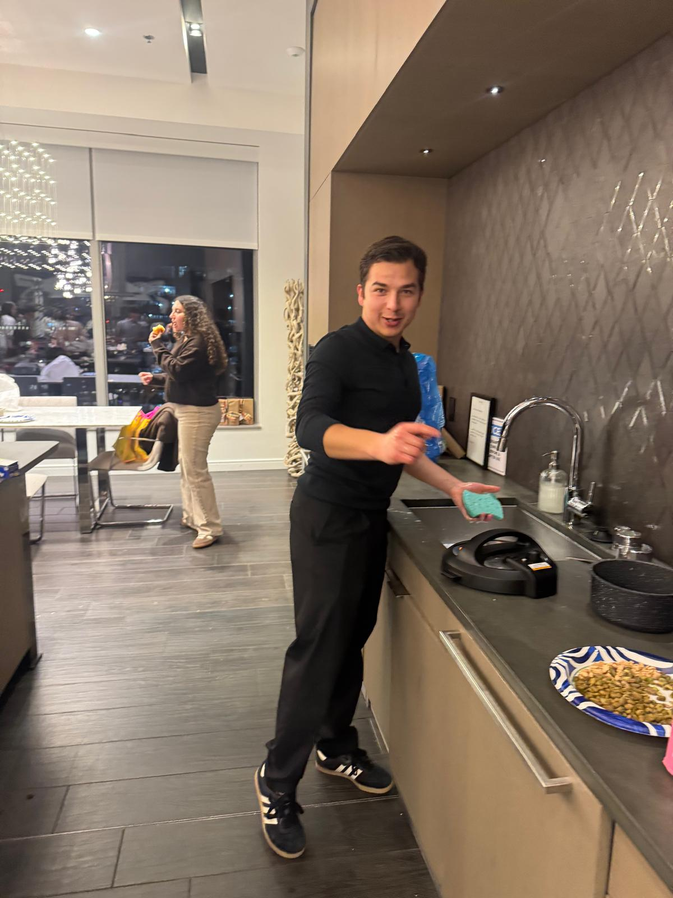
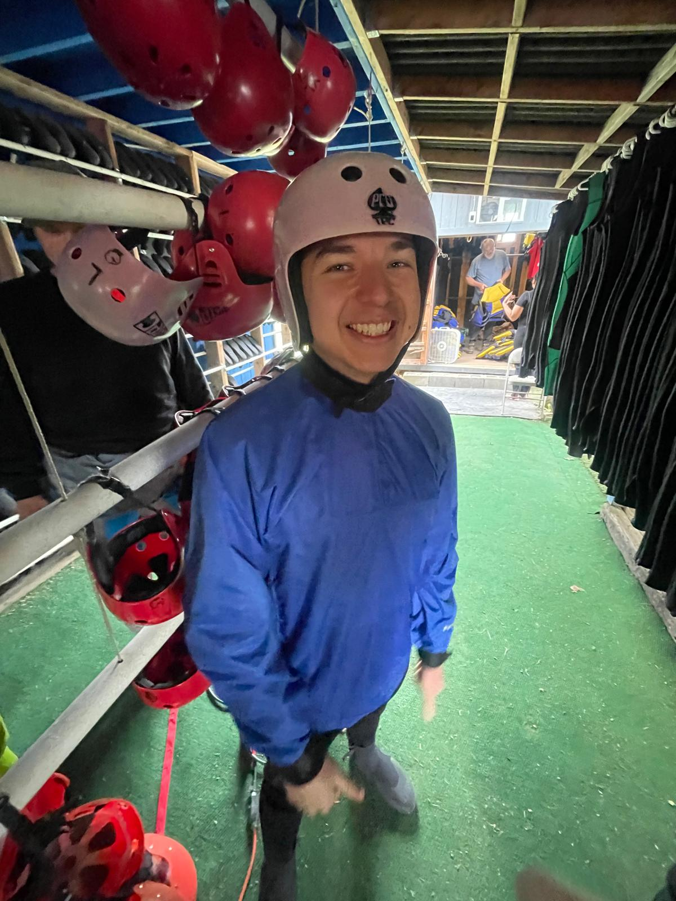
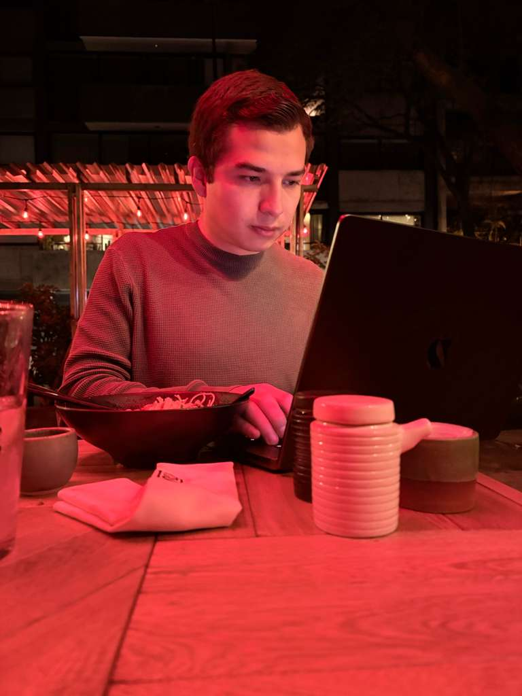

Carlos no usa 2 computadoras porque necesite más poder… las computadoras le pidieron ayuda a él

Calvin Klein no lo contrató como modelo… le rogó que dejara de opacar a los demás

Carlos no carga 2 mochilas porque una es fácil… la montaña le pidió más peso para sentir que alguien la retaba

La selección mexicana no clasifica sin Carlos… Carlos clasifica sin la selección mexicana

Carlos no estudió 2 carreras… la primera universidad le pidió que se fuera porque hacía ver mal a los profesores

Bimbo no le dio patrocinio a Carlos… Carlos les dio permiso de poner su logo junto a él
Carlos no cosecha fresas… las fresas se lanzan a la caja cuando lo ven llegar
Mt. St. Helens no hizo erupción… Carlos la subió y el volcán se apagó de la impresión

Carlos no necesita oficina… cualquier asiento trasero es Silicon Valley cuando él abre la laptop

Carlos no limpió la cocina… la mugre se fue sola cuando lo vio llegar

El instructor le dijo a Carlos que tuviera cuidado… Carlos le dijo al instructor lo mismo

Carlos pausó su código para pedir la cuenta… y el stock de Microsoft se desplomó en tiempo real